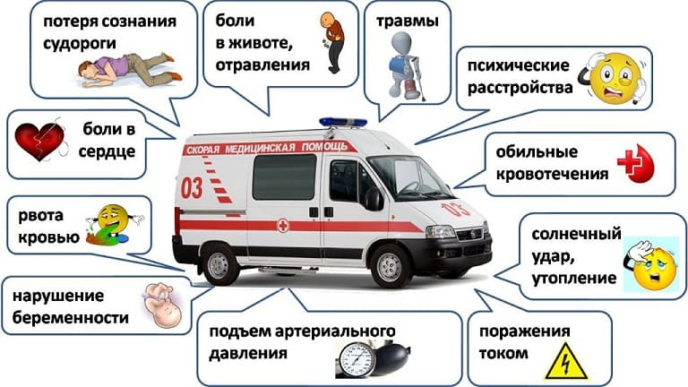
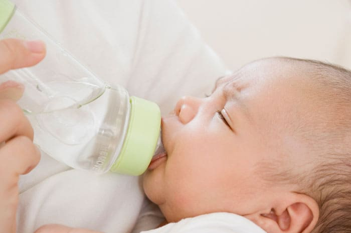
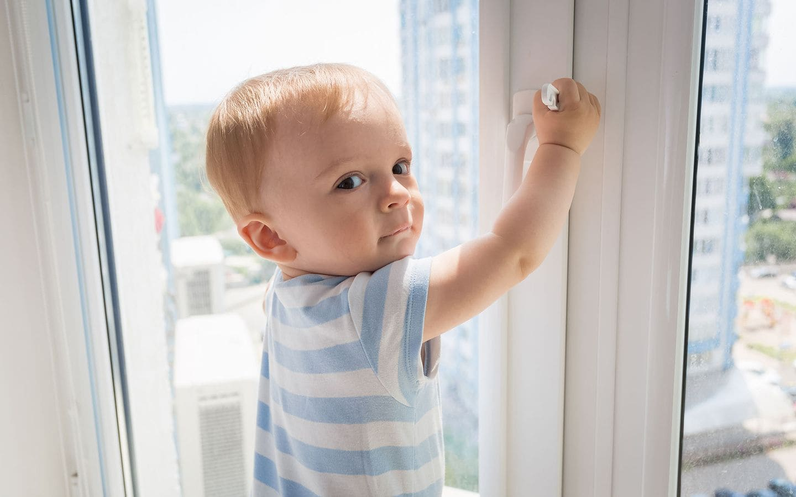
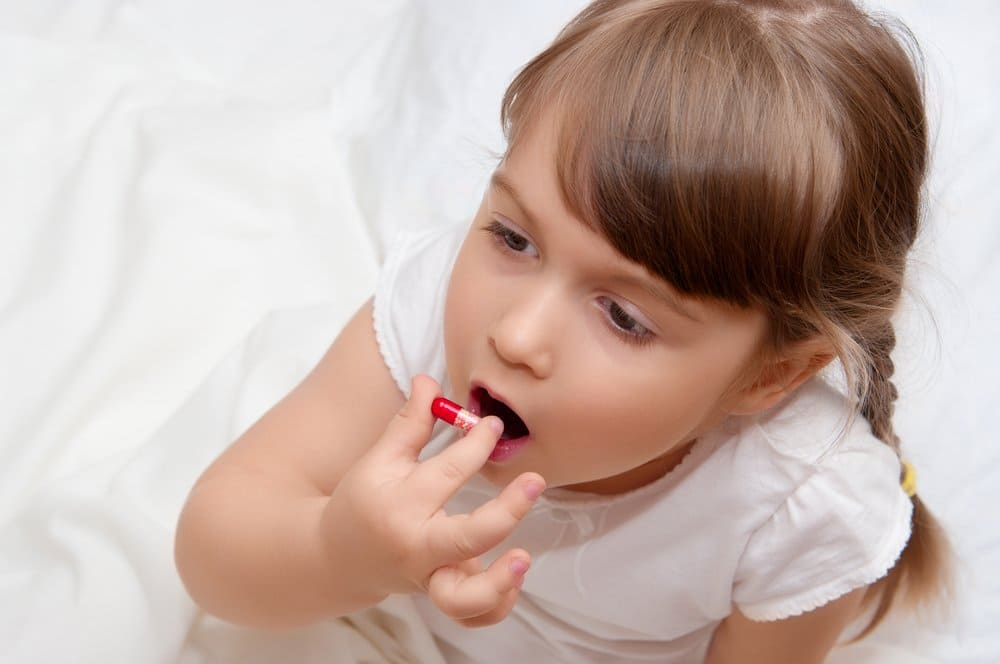

Необходимость вызывать скорую медицинскую помощь (СМИ) для ребенка – кошмарный сон любого родителя. Нередко родители звонят в скорую понапрасну, просто поддавшись панике. И тут важно, с одной стороны, стараться не вызывать экстренную медицинскую службу, если к этому нет веских оснований, а с другой стороны – не пропустить момент, когда экстренная помощь действительно необходима.

Специалисты выделяют семь основных причин для вызова СМИ ребенку:
1) Проблемы с дыханием (одышка)
Суть одышки заключается в нарушении поступления достаточного количества кислорода в организм и попытке компенсировать это нарушение более интенсивным дыханием.
Одышка чаще всего развивается из-за аспирации (вдохнул и подавился) инородного тела, бронхиальной астмы, инфекции верхних дыхательных путей или пневмонии. Признаками одышки являются кашель, свистящие хрипы, затрудненное дыхание (особенно раздувание крыльев носа и использование грудных и шейных мышц для акта дыхания), кряхтение, перебои речи или посинение кожи.
КОГДА ЗВОНИТЬ 03?
– частота дыхания у ребенка более 50–60 вдохов в минуту;
– у ребенка резкий цианоз вокруг рта;
– эти симптомы не улучшаются с течением времени или даже нарастают.
2) Перелом костей
Переломы являются нередкой чрезвычайной ситуацией у детей. В большинстве случаев родители вполне могут доставить ребенка в травмпункт сами, однако
ПОЗВОНИТЕ 03 НЕМЕДЛЕННО, ЕСЛИ:
– ребенок корчится от боли, вы не можете снять ее жаропонижающим сиропом или свечой;
– обломок кости торчит сразу под кожей;
– травма касается головы или шеи;
– у ребенка изменен уровень сознания (например, ребенок чрезмерно заторможен).
3) Тяжелое обезвоживание
Самые частые причины сильного обезвоживания – это рвота и понос. Не каждая рвота или понос требует вызова экстренной медицинской службы, обычно достаточно часто и дробно поить ребенка, компенсируя потери жидкости и солей.

КОГДА ЗВОНИТЬ 03?
– ребенок вам не отвечает или отвечает неадекватно;
– ребенок корчится от сильных спазмов и неослабевающей боли в животе (это может указывать на аппендицит, камни в почках и другие опасные состояния).
4) Приступ судорог
У младенцев и дошкольников быстрое повышение температуры может вызвать фебрильные судороги. Большинство судорог, связанных с лихорадкой, не является чрезвычайной ситуацией. Судороги, возникшие без повышения температуры, имеют обычно более серьезные причины.
КОГДА ЗВОНИТЬ 03?
– приступ длится более трех – пяти минут;
– ребенок имеет затрудненное дыхание или синеет;
– после прекращения приступа судорог ребенок не может вернуться в свое нормальное психическое состояние.
5) Падения
Падение с большой высоты особенно опасно травмой головы, позвоночника или внутренних органов. При подозрении на травму головы убедитесь, что ребенок адекватно отвечает на вопросы

КОГДА ЗВОНИТЬ 03?
– у ребенка рвота более одного раза после травмы;
– он теряет сознание;
– ребенок жалуется на онемение или покалывание в теле;
– у вас есть основания подозревать повреждение внутренних органов;
– у вас есть основания подозревать травму шеи или позвоночника. В этом случае не пытайтесь перемещать вашего ребенка: перед транспортировкой необходимо зафиксировать позвоночник, это могут правильно сделать только сотрудники скорой помощи.
6) Порезы и кровотечения
Если у ребенка началось кровотечение, надавите на рану, дождитесь, пока кровотечение остановится, и оцените степень повреждения. Детям, которые нуждаются в наложении швов, как правило, не следует вызывать экстренную медицинскую службу: родители вполне могут самостоятельно доставить ребенка в приемное отделение хирургического стационара.
КОГДА ЗВОНИТЬ 03?
– у вашего ребенка есть заболевания, нарушающие свертывание крови;
– вы не можете остановить кровотечение
7) Подозрение на отравление

Это одна из самых коварных ситуаций, и она требует вызова скорой помощи почти всегда. Если вы поняли, что ребенок открыл вашу аптечку и мог проглотить медикаменты, срочно вызывайте 03.
(Сергей Бутрий "Здоровье ребенка: современный подход")